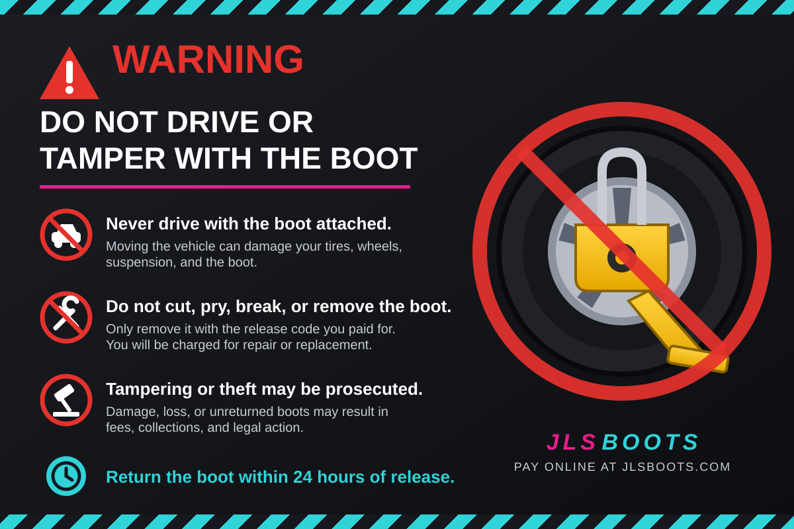

Payment received. Thank you.
Your release code was shown on the payment confirmation screen. If you lost it, call .
Your release code was shown on the payment confirmation screen. If you lost it, call .
Return the boot by
Step 1: Remove the boot
- Enter your 3-digit release code into the lock, starting with the wheel closest to the arrow and going top to bottom.
- Pull the lock open and slide the boot off the tire.
- Check the boot for loose parts and keep everything together.
- Do not drive with the boot on. It will damage your vehicle and the boot.

Step 2: Drop it off
Take the boot to any one of these locations and place it in the JLS Boots return box.
If the boot is not returned within hours, or is returned damaged, a one-time replacement fee will be charged to the card you paid with.
Keep this page open or bookmark it so you have the drop-off addresses handy.